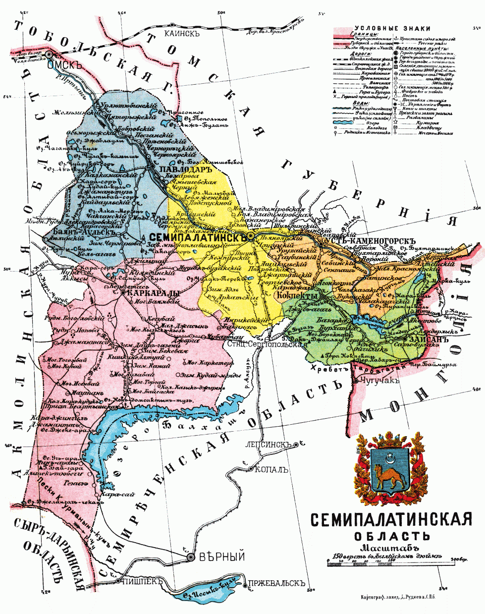

County Overview
This section introduces the general conditions of Semipalatinsk Uezd, including its geography, population, pastoral economy, and environmental setting.
Read more
This page introduces the structure of the Russian imperial land survey in Semipalatinsk Uezd. The survey divided the county into thirty districts, grouped them according to geographical and agricultural conditions, and used a fixed calculation method to determine how much land Kazakh communities supposedly needed. This structure is central to understanding how officials produced the category of “surplus land.”
This section introduces the general conditions of Semipalatinsk Uezd, including its geography, population, pastoral economy, and environmental setting.
Read moreThis section presents the thirty districts examined in the survey and explains how each district was evaluated for agricultural suitability.
Read moreThis section explains how the thirty districts were grouped into five categories according to geographical conditions and agricultural potential.
Read moreThis section explains how officials calculated land needs, including the use of the 15-desiatina-per-person norm and the production of “surplus land.”
Read moreThis section critiques the survey’s assumptions, especially its treatment of pastoral land as measurable, fixed, and convertible into agricultural settlement land.
Read more